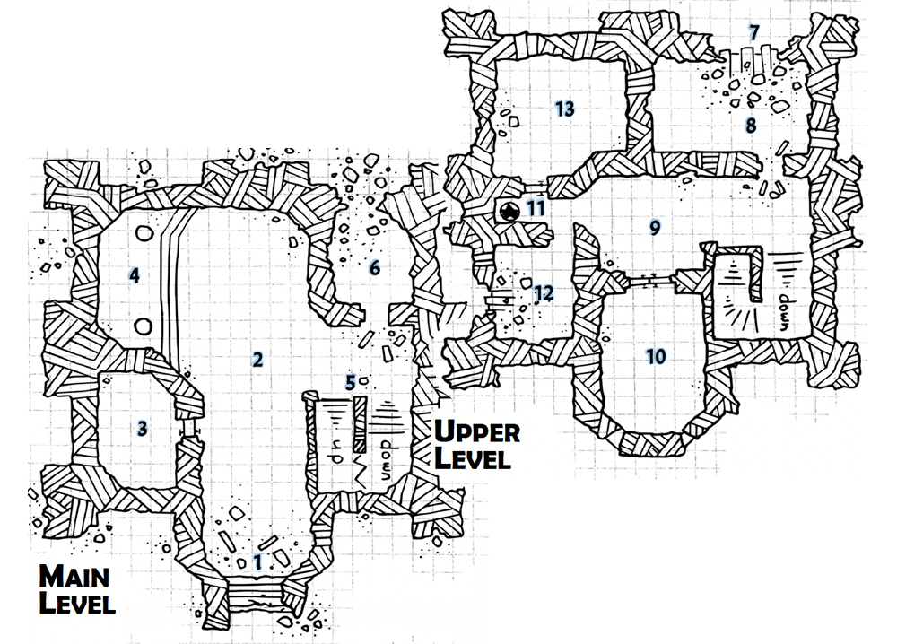

Danger Level. Noise draws the bandits.
Light. Not an issue. Daylight reaches every room; torches and campfires burn at night.
Treasure Tables
| d20 | Poor (0 XP) | Normal (1 XP) |
|---|---|---|
| 1 | pair of dirty, tin spoons (2cp) | silver ring (5sp) |
| 2 | soapstone carving of a dog (5cp) | copper snake armband (10sp) |
| 3 | wooden drink token (3cp) | leather armor (10sp) |
| 4 | clay pot (1sp) | pouch of turquoise stones (20sp) |
| 5 | empty potion vial (1sp) | silver, leaf broach (15sp) |
| 6 | dirty rags (0cp) | scroll of holy weapon (50sp) |
| 7 | rusty manacles (10cp) | silvered dagger (10sp) |
| 8 | drinking horn (5cp) | loose, 30sp |
| 9 | dagger, poor quality (5cp) | 3 rations (5sp) |
| 10 | torch (5cp) | tome of trolls* (50sp) |
| 11 | 4 russet potatoes (4cp) | silver inlayed demon mask (30sp) |
| 12 | 10' rope (2cp) | painting of a crying child (50sp) |
| 13 | 3 iron spikes (3cp) | ivory statuette of stag (35sp) |
| 14 | oil flask (5cp) | 10 silvered arrows (10sp) |
| 15 | 4 lockpicks (1sp) | rundlet of ale (15sp) |
| 16 | old orc banner (5cp) | 3 jade dice set (6sp) |
| 17 | bag of caltrops (1sp) | quills and ink travel kit (10sp) |
| 18 | lock, easy w/o key (5cp) | ceremonial kyrss* (10sp) |
| 19 | buckler (3sp) | pouch of preservation* (50sp) |
| 20 | 3 grave dust* (0sp) | hugo's healing potion* (25sp) |

OTHER INFO
An abbey with a dark history hidden by the church, but the ruin remains a scar on the land. It attracts creatures and groups of chaos. It has struck again. A serving woman to the baroness was captured by the bandits that now inhabit the abbey.
Kidnapped.
“Three days ago Marium, a gentlewoman, searched the countryside for the magenta petals of the echinacea flower. Her lady suffers from clepid artetica.” Melinda dabs away a few tears. “I'm afraid we'll take the brunt of the lord's anger if his wife is not tended to. But Marium is a sweet woman who helped us with salves and healing powders when she could sneak away.”
No Potatoes for You!
A young man, Mitchell, approaches. He holds his blood soaked shoulder. He is covered in dirt and holds a shovel in his free hand. “Bandits came down the hill to steal our potatoes. The idiots don't know it's too early to eat the potatoes.”
Mitchell tells the party four thieving bastards approached with weapons out. “They thought they were going to walk up and take it all. We chased them away. A wood axe caught my shoulder. I'll go see Lilly for a salve. Then I'm taking the two spears to the field. Next time we'll gut the dumbasses.”
The bandits blocked the north road with trees and branches. Two of the idiots stand guard. Mitchell says the bandits are holed up in the abbey. “That abbey has been nothing but trouble. Should've been torn down long ago, but it's noble land.”
The Abbey.
Several years ago the abbey was abandoned when the pious monks and nuns gave into hedonistic desires. Their desires grew darker. They captured villagers to experiment upon. The justiciars executed them within the abbey then stripped it of valuables. The local baron, thinking it would make a fantastic addition to his assets, purchased the abbey. Upon his first and only visit to the abbey, he forsook any notion of rehabilitating the location.
What remains is a two-story crumbling structure. The party can choose three different ways to enter: the front steps (Area 1), the second entrance (Area 6), or the second floor (Areas 7 and 12).
Danger level. If the party makes a lot of noise they will attract a lot of attention. A bandit or two may soon become the entire group.
Light. Light is not an issue in this adventure. The party can choose to attack during the day, when light reaches every room. At night, torches and campfires burn to allow the bandits to see.
Doors. Wood. Unlocked unless otherwise stated.
The Bandits.
There are three types of bandits within this adventure. Cowardly bandits possess poor quality weapons and are 0-level combatants. Bandits are statted per the quickstart rules. Hardened bandits have the equipment of regular bandits but the stats of a soldier.
Poor quality weapons. Poor quality weapons suffer a -1 to hit and damage penalty. In addition, a critical miss with a poor quality weapon has a 50% chance of breaking (1-3 on a d6).
Sacks. Using a sack takes up one gear slot, but allows a character to carry two gear slots within. These don't count against the character's maximum gear slots. It requires a free hand to use.
Roadblock.
It's a 30 minute walk north. The abbey is easy to see. Its broken walls and peaks are easy to spot on top of the hill. The blockade is poorly executed with a few small trees and branches. As Mitchell said there are two bandits standing behind the blockade. They carry bows.
Parlaying with the bandits proves they have the collective intelligence of a drunken gnat. They make threats by repeating what the party says. An example, “Leave or die bandits.” Bandits reply, “You need to leave or die.”
Attacking the bandits causes them to yell a lot. Not to alert the other bandits, but out of fear. They shoot their bows and carry knives, both are of poor quality, suffering a -1 to hit and damage.
Sneaking up on the bandits is an easy task (DC 9 DEX). Both are jumping at every noise.
Conclusion.
Marium gathers the magenta petals of the echinacea flower for her lady. She doesn't wish to speak about what happened. Before the party leaves she asks to keep her capture private. If her locket was returned she gives them a Potion of Healing.
Ally. Marium can be a long term ally, but she'll never be friendly.
The ruin remains the same. Attracts a chaotic person, group, or creature within the year.
Statue removed. Attracts a chaotic person, group, or creature within the week.
Curse removed. If the party removes the curse, the baron rewards the party 200sp. More interesting, this act could turn into a favor from the baron in the future.
Treasure Notes.
The d20 poor (0 XP) and normal (1 XP) treasure tables are in the left panel.
Grave dust. A spell component that provides a +1 to a priest's roll when used in conjunction with the turn undead spell.
Tome of trolls. A brief, but insightful book about trolls. It provides the strengths and weaknesses of a troll, providing a +1 to all rolls when battling trolls.
Ceremonial kryss. This can be used in a chaotic priest's rite and count toward the cost. It can be reused in rites.
Pouch of preservation. A small pouch created by halflings to preserve the freshness of the herbs and seasonings during long travels. Wizards use them to preserve spell components from going bad. Only a 0 gear slot item can fit within.
Hugo's healing potion. These healing potions are notorious for being cheap and that they sometimes fail to work (a 1 in 6 chance). They heal 1d4 damage.